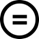

Connaître les droits d’auteur et le droit des bases de données
Le droit d'auteur distingue les droits moraux, inaliénables, et les droits patrimoniaux qui peuvent être cédés à des tiers. Il convient d’être attentif aux droits patrimoniaux cédés à un éditeur afin de ne pas limiter la diffusion de l’œuvre.
Les droits moraux
L’article L.121-1 du chapitre 1er (Droits moraux) du Code de la propriété intellectuelle dispose que l'auteur jouit du droit au respect de son nom, de sa qualité et de son œuvre. Ses droits moraux comportent ainsi :
- le droit de paternité, qui permet à l’auteur d’exiger la mention de son nom lors de toute exploitation de son œuvre ;
- le droit au respect de l'intégrité de son œuvre ;
- le droit de divulgation, qui permet à l’auteur de décider du moment et des conditions de la communication de son œuvre au public ;
- le droit au repentir et au retrait de l’œuvre, même après sa commercialisation.
Les droits patrimoniaux
Les droits patrimoniaux sont les droits de reproduction, de diffusion, de prêt, de représentation (communication au public) ou d’affichage public, et de modification. Ils garantissent que l’auteur est propriétaire de son œuvre et qu’il peut l’exploiter sous quelque forme que ce soit et en tirer un bénéfice. L’auteur peut céder ses droits patrimoniaux à des tiers, en totalité ou partiellement, à titre gratuit ou onéreux, pour une durée limitée dans le temps. Le détenteur des droits patrimoniaux aura alors le droit exclusif de reproduire tout ou partie de l’œuvre. Les droits patrimoniaux sont ceux qui peuvent être cédés à l’éditeur de l’œuvre dans le droit français (en droit français, la cession des droits moraux n’est pas possible).
Le droit des bases de données
Les bases de données sont protégées en Europe par trois types de droits :
- Le droit sur les éléments intégrés dans la base de données (textes, marques, données à caractère personnel) ;
- Le droit d’auteur sur la structure de la base de données (agencement, disposition) ;
- Le droit sui generis du producteur de la base de données, qui protège l’investissement financier, matériel et humain dans la base de données. Le producteur qui prouve avoir investi de manière substantielle pour constituer une base de données, excluant les frais liés à l’obtention des données elles-mêmes, peut s’opposer à toute extraction ou toute réutilisation substantielle de celle-ci.
Comprendre et protéger ses droits d’auteur en accès ouvert
Comprendre ses droits d'auteur
Identifier sur quoi porte le droit
Le droit d’auteur s’applique à tous les contenus originaux qui composent une œuvre. Il naît automatiquement au fil de la création de ces contenus, indépendamment de toute divulgation publique (article L111-2 du Code de la propriété intellectuelle). Une limite concerne toutefois les logiciels pour lesquels le Code de la propriété intellectuelle dévolue les droits patrimoniaux à l’employeur de l’auteur, qui reste titulaire de ses droits moraux (notamment le droit d’être cité comme auteur) (article 11-9 du Code de la propriété intellectuelle).
Si l’œuvre est issue du travail de plusieurs coauteurs, elle est la propriété commune des coauteurs qui doivent exercer leurs droits d’un commun accord (article L.113-3 du Code de la propriété intellectuelle). Si l’auteur d’une œuvre n’est pas à l’origine de tous les contenus (textes, illustrations sous forme d’images, de photographies, de schémas, de croquis, etc.) qui la composent, ce sont les auteurs respectifs de ces contenus qui détiennent les droits d’auteur à leur égard
Utiliser des contenus extérieurs (textes ou illustrations)
L’accès ouvert lève les barrières de l’accès au travail scientifique et au partage des résultats de la science, mais il maintient toutes les protections du droit d’auteur. « Aussi ouvert que possible, aussi fermé que nécessaire », il ne lève pas l’obligation de protéger les données à caractère personnel, ni celle de respecter les droits de propriété intellectuelle appartenant à des tiers. L’utilisation ou la réutilisation dans une œuvre de contenus non entrés dans le domaine public ou non diffusés avec une licence de réutilisation (licence CC ou équivalente) nécessite une autorisation préalable, expresse et écrite du titulaire des droits sur ces contenus.
- L' article L122-5 du Code de la propriété intellectuelle prévoit quelques exceptions à cette règle qui permettent de réutiliser des contenus sans demander l’autorisation à leurs auteurs, notamment l’exception dite « pédagogique et de recherche » quand l’œuvre n’est destinée qu’à un public exclusivement composé d’étudiants et de chercheurs (ce qui exclut le dépôt de l’œuvre en archive ouverte ou son exploitation commerciale) ou l’exception de « courtes citations » quand les contenus incorporés (à l’exclusion des images, pour lesquelles cette exception ne s’applique pas) sont l’objet d’analyses développées dans l’œuvre. Dans tous les cas, l’auteur et la source doivent être cités.
Dans les cas où le contenu qu’il est envisagé d’incorporer à l’œuvre n’est pas associé à ce type de licence, il convient d’identifier l’auteur (son ayant droit ou le gestionnaire de ses droits) pour obtenir de sa part une autorisation écrite, spécifique à l’usage et aux conditions de diffusion qui doivent lui être précisées. Le contenu pourra alors être diffusé dans le cadre prévu par cette autorisation.
Dans les cas où les auteurs des contenus qu’il est envisagé d’incorporer à l’œuvre ne peuvent être identifiés, les contenus ne pourront pas être diffusés. La réutilisation d’une œuvre sans l’accord de son auteur expose en effet à des poursuites pour contrefaçon.
- Lorsqu’un auteur a cédé à un éditeur ses droits pour la publication d’une œuvre, texte et/ou image, il a pu se dessaisir de son droit à utiliser ses propres productions dans d’autres publications. Dans ce cas, la réutilisation du texte ou de l’image peut constituer, bien qu’il en soit l’auteur, une contrefaçon. Une vérification préalable des termes du contrat passé avec l’éditeur s’impose.
La facilité d’accès aux images sur le web, qu’elles soient ou non répertoriées dans des bases de données « libres de droit », ne signifie pas qu’elles sont exemptes de droits.
Les informations concernant la licence éventuelle qui lui a été attribuée, les droits et les conditions d’utilisation qui y sont associés, doivent être recherchées :
- Si l’image est protégée par un copyright, il convient de faire une demande formelle d’autorisation de reproduction au détenteur de droits.
- Si aucune information n’est disponible, le plus sage sera de renoncer à cette illustration.
- Si l’image est sous licence Creative Commons (voir ci-après, chapitre « Comprendre les licences de diffusion Creative Commons »), elle doit être utilisée conformément aux termes de cette licence.
- Si une licence plus restrictive que celle de l’image utilisée est attribuée à l’œuvre, l’image doit être accompagnée de la licence avec laquelle elle a été diffusée initialement. La source de l’image et les droits associés doivent être cités (mention du nom du site d’où provient l’image, du nom de l’auteur et de la licence qui encadre l’utilisation de l’image)
Pour plus d'information: scienceouverte@college-de-france.fr
Le ministère en charge de l’enseignement supérieur et de la recherche a annoncé le 3 décembre 2025 la mise en œuvre de la licence collective étendue prévue par l’article 28 de la Loi du 24 décembre 2020 de programmation de la recherche (LPR). La mise en œuvre de cette mesure, qui doit faciliter l’utilisation d’images dans les publications en accès ouvert, est rendue possible par la signature d’une convention avec les organismes de gestion collective des droits d’auteur.
Cette licence permet de lever, pour l’exploitation d’images dans les publications de recherche en France, les contraintes liées à l’identification des ayants droit, les demandes d’autorisation, la contractualisation ou encore le paiement, tout en garantissant le respect des droits des créateurs d’images. Le dispositif prévoit en effet le paiement d’un forfait aux ayants droit par le ministère en charge de l’enseignement supérieur et de la recherche.
Pour accompagner les chercheurs, il est prévu que l’Institut national d’histoire de l’Art (INHA) publie un guide méthodologique, précisant notamment le périmètre de la licence collective étendue, limité aux publications en accès ouvert et à but non lucratif. Un formulaire en ligne dédié doit être mis en place pour permettre à ceux qui publient de signaler un usage d'image dans le cadre de l'article 28. Enfin, le déploiement de la licence étendue nécessite également que les plateformes d’édition et de publication adaptent leurs conditions générales d’utilisation pour informer leurs usagers.
Négocier une cession partielle ou non exclusive des droits patrimoniaux avec l’éditeur
Pour donner accès à une œuvre au plus grand nombre sans contrainte financière, il est possible de négocier une cession partielle des droits patrimoniaux avec l’éditeur. À cet effet, un addendum d’auteur (ou avenant) à l’accord de publication (ou accord de cession de droits d’auteur) peut permettre à l’auteur de conserver certains droits d’exploitation sur son œuvre, parmi lesquels, à titre d’exemple :
- L’affichage de la publication sur la page web personnelle de l’auteur ;
- Le dépôt de la publication dans des archives ouverte ;
- La transformation de la publication pour préparer des œuvres connexes ;
- L’intégration de tout ou partie de la publication dans des publications à venir ;
- La distribution de la publication dans le cadre d’un enseignement et de la recherche ;
- L’autorisation donnée à un tiers d’utiliser l’œuvre à des fins non commerciales et sous réserve de citation.
Si les droits sont cédés à l’éditeur « sans exclusivité », alors l’auteur conserve ses droits sur son œuvre : il octroie simplement à l’éditeur des autorisations d’exploitation de l’œuvre. Il est libre de republier ou de diffuser son œuvre par ailleurs. Mais une cession de ce type a cependant pour effet que l’auteur ne peut plus céder de droits exclusifs sur cette même œuvre, puisque les droits auront déjà été antérieurement cédés (les autorisations d’exploitation auront déjà été données) au premier éditeur. Des exploitations et cessions ultérieures sont possibles, mais sans exclusivité.
- Si une cession est exclusive, mais avec une exclusivité d’une durée limitée, elle se poursuit sans exclusivité au-delà de cette durée. Dans les cas où l’éditeur choisi propose un accès libre et gratuit à l’œuvre de l’auteur selon le modèle économique auteur- payeur (ce qu’on entend généralement par « voie dorée avec APC » ou « Gold Open Access APC » : voir le chapitre « Les modèles économiques de diffusion en accès ouvert »), l’auteur conserve ses droits patrimoniaux contre un paiement d’APC (Article Processing Charges) ou de BPC (Book Processing Charges).
Comprendre les licences de diffusion « Creative Commons »
Qu’est-ce qu’une licence de diffusion
La législation sur le droit d’auteur permet uniquement aux utilisateurs d’une œuvre de la consulter et d’en faire des copies ou reproductions privées, réservées à un usage personnel.
Tout autre usage nécessite une autorisation préalable, expresse et écrite du titulaire des droits, idéalement dans le cadre d’un contrat. Seules quelques exceptions existent, permettant d’utiliser de courtes citations de l’œuvre à des fins d’analyses, de représenter ou reproduire des extraits de l’œuvre dans une visée pédagogique pour un public exclusivement composé d’étudiants et de chercheurs ou encore d’utiliser l’œuvre pour des revues de presse et des parodies, pastiches ou caricatures.
Pour fixer à l’avance les conditions et les limites d’utilisation d’une œuvre autrement qu’à titre privé, son auteur, s’il n’a pas cédé ses droits patrimoniaux à un éditeur de façon exclusive, peut lui apposer une licence de diffusion. Dans le cas contraire, l’œuvre ne peut, sans autorisation préalable, expresse et écrite, être utilisée autrement qu’à titre privé. L’utilisation d’une licence de diffusion permet au titulaire des droits sur une œuvre d’accorder à l’avance aux futurs utilisateurs certains droits d’utilisation de cette œuvre. Elle est un instrument juridique, complémentaire aux contrats de cession de droits, s’inscrivant dans le cadre du droit d’auteur.
Une licence de diffusion est dite « ouverte » ou « de libre diffusion », même si elle comporte des restrictions d’usage. C’est le cas des licences interdisant les modifications ou adaptations de l’œuvre ou la réutilisation dans un cadre commercial. Le choix d’une licence fixe les conditions des exploitations futures de cette œuvre qui sont autorisées par défaut (sans qu’une demande soit faite à l’auteur).
Les licences « Creative Commons » (CC) : généralités
Les licences de libre diffusion les plus couramment utilisées sont les licences « Creative Commons » (ou licences CC). Créées en 2002 par l’association à but non lucratif Creative Commons, ces licences sont des formes de contrats unilatéraux qui s’appliquent dans tous les pays et qui sont conçus pour être opposables en justice. Elles permettent une cession non exclusive, à titre gratuit et pour le monde entier, de certains droits d’auteur patrimoniaux.
Conçues pour favoriser la diffusion et la réutilisation des travaux scientifiques, elles sont compatibles avec la législation française sur la protection du droit d’auteur. Ces licences permettent :
- aux auteurs d’indiquer facilement et précisément les droits qu’ils veulent conserver et les droits auxquels ils renoncent afin de permettre à d’autres de réutiliser leur œuvre ;
- aux utilisateurs d’être informés de ces conditions et de ne pas avoir à demander l’autorisation formelle d’un auteur avant l’utilisation de son œuvre, pour peu que cette utilisation reste dans les limites autorisées par la licence.
Les licences Creative Commons prennent en compte le droit d’auteur et le droit sui generis des bases de données (voir chapitre « Le droit des bases de données »). Il est donc possible d’utiliser ces licences dans le cadre de projets Open data et de choisir d’attribuer une même licence Creative Commons pour une publication et les jeux de données liés, ou une licence pour la publication et une autre pour les données. Dans le cadre d’un projet éditorial (publication d’un article, d’un ouvrage, etc.), le choix d’une diffusion sous licence Creative Commons doit être effectué dans le cadre du contrat d’édition.
Quelle que soit la licence « Creative Commons » utilisée, l’autorisation de reproduire, de distribuer et de communiquer l'œuvre au public dans son format original, y compris dans des œuvres composites, est consentie à titre non exclusif et gratuit. De la même façon, le droit à la paternité (citation du nom de l’auteur) doit toujours être respecté. Il s’agit d’un droit moral, inaliénable, perpétuel et incessible. Des clauses optionnelles permettent sinon d’instaurer des restrictions d’usage.
Les clauses sont identifiées par des pictogrammes qui permettent une lecture instantanée des conditions d’utilisation. Elles sont accompagnées d’un résumé des droits cédés :
Attribution = Paternité (sigle BY, clause permanente): obligation de citer l’auteur de l’œuvre initiale et d’indiquer si des modifications ont été effectuées sur cette œuvre. L’auteur de l’œuvre initiale doit être cité dans toutes les exploitations de son œuvre, avec un lien vers l’œuvre originale. En France, cette obligation est imposée par le droit moral de l’auteur, qui est inaliénable et donc incessible.
Non Commercial = Pas d’utilisation commerciale (sigle NC, clause optionnelle) : interdiction de tirer un profit commercial (gain direct ou plus-value commerciale) en utilisant l’œuvre ou son adaptation. Le titulaire des droits se réserve les exploitations commerciales de son œuvre qui peuvent être négociées dans un contrat complémentaire. Sans cette clause, n’importe qui peut utiliser l’œuvre à des fins commerciales sans demande d’autorisation préalable.
No derivative works = Pas d’œuvres dérivées (sigle ND, clause optionnelle) : impossibilité de modifier ou d’adapter l’œuvre. Le titulaire des droits impose que son œuvre soit utilisée sans modification et dans son intégralité. Cela revient à autoriser uniquement la reproduction et la diffusion de l’œuvre originale, éventuellement dans une œuvre composite comme une compilation de textes, sous réserve que l’œuvre soit reprise dans son intégralité. Cela n’autorise pas la traduction de l’œuvre.
Share alike = Partage dans les mêmes conditions (sigle SA, clause optionnelle), aussi appelé « copyleft » : obligation de rediffuser l’œuvre, éventuellement modifiée, selon la même licence ou une licence similaire (version ultérieure par exemple) à celle de l’œuvre originale. En cas d’utilisations successives, cette clause impose que les conditions de la cession initiale soient respectées tout au long de la chaîne d’utilisation.
Attribuer une licence « Creative Commons » à une œuvre»
Comprendre les 7 licences « Creative Commons »
Les termes des 6 licences CC sont consultables sur le site creativecommons.org . Les droits cédés, selon l’utilisation de chacune d’entre elles, peuvent être résumés comme suit :
CC-BY (Attribution) : Permet toute exploitation de l’œuvre (partager, copier, reproduire, distribuer, communiquer, réutiliser, adapter) par tous moyens, sous tous formats et sous toutes licences. Toutes les exploitations de l’œuvre ou des œuvres dérivées, y compris à des fins commerciales, sont possibles.
Obligations liées à la licence :
Créditer l’auteur, indiquer les sources et indiquer si des modifications ont été effectuées (obligation d’attribution).
CC-BY-SA (Attribution / Partage dans les mêmes conditions : Permet toute exploitation de l’œuvre (partager, copier, reproduire, distribuer, communiquer, réutiliser, adapter) par tous moyens et sous tous formats. Toutes les exploitations de l’œuvre ou des œuvres dérivées, y compris à des fins commerciales, sont possibles.
Obligations liées à la licence :
Créditer l’auteur, indiquer les sources et indiquer si des modifications ont été effectuées (obligation d’attribution).
+ Diffuser les nouvelles œuvres dérivées dans des conditions identiques (selon la même licence) à celles de l’œuvre originale (autoriser les modifications et les utilisations commerciales pour ces nouvelles œuvres).
CC -BY-ND (Attribution / Pas de Modification) : Permet toute diffusion de l’œuvre originale (partager, copier, reproduire, distribuer, communiquer), y compris à des fins commerciales, par tous moyens et sous tous formats, tant que l’œuvre est diffusée sans modification et dans son intégralité.
Obligations liées à la licence :
Créditer l’auteur, indiquer les sources et indiquer si des modifications ont été effectuées (obligation d’attribution).
+ N’effectuer aucune diffusion partielle, modification, adaptation ou traduction de l’œuvre.
CC -BY-NC (Attribution / Pas d’Utilisation Commerciale) : Permet toute exploitation de l’œuvre (partager, copier, reproduire, distribuer, communiquer, réutiliser, adapter) par tous moyens, sous tous formats et sous toutes licences. Toutes les exploitations de l’œuvre ou des œuvres dérivées, sauf à des fins commerciales, sont possibles.
Obligations liées à la licence :
Créditer l’auteur, indiquer les sources et indiquer si des modifications ont été effectuées (obligation d’attribution).
+ Ne pas tirer profit (gain direct ou plus-value commerciale) de l’œuvre ou des œuvres dérivées.
CC-BY-NC-SA (Attribution / Pas d’Utilisation Commerciale / Partage dans les mêmes conditions) : Permet toute exploitation de l’œuvre (partager, copier, reproduire, distribuer, communiquer, réutiliser, adapter) par tous moyens, sous tous formats. Toutes les exploitations de l’œuvre ou des œuvres dérivées, sauf à des fins commerciales, sont possibles.
Obligations liées à la licence :
Créditer l’auteur, indiquer les sources et indiquer si des modifications ont été effectuées (obligation d’attribution).
+ Ne pas tirer profit (gain direct ou plus-value commerciale) de l’œuvre ou des œuvres dérivées.
+ Diffuser les nouvelles œuvres dérivées dans des conditions identiques (selon la même licence) à celles de l’œuvre originale (autoriser les modifications et interdire les utilisations commerciales pour ces nouvelles œuvres).
CC -BY-NC-ND (Attribution / Pas d’Utilisation Commerciale / Pas de Modification) : Permet toute diffusion de l’œuvre originale (partager, copier, reproduire, distribuer, communiquer), sauf à des fins commerciales, par tous moyens et sous tous formats, tant que l’œuvre est diffusée sans modification et dans son intégralité.
Obligations liées à la licence :
Créditer l’auteur, indiquer les sources et indiquer si des modifications ont été effectuées (obligation d’attribution).
+ Ne pas tirer profit (gain direct ou plus-value commerciale) de l’œuvre ou des œuvres dérivées.
+ N’effectuer aucune diffusion partielle, modification, adaptation ou traduction de l’œuvre.
- Les licences non commerciales (BY-NC ou BY-NC-ND notamment) excluent concrètement de nombreuses possibilités d’utilisation du travail de recherche diffusé par l’auteur : une « utilisation commerciale » peut en effet se traduire par la mise en ligne sur un site web comportant des bannières publicitaires, un usage pédagogique payant, ou encore un usage commercial par une association à but non lucratif. C’est pourquoi les établissements membres du consortium Couperin recommandent aux auteurs de privilégier les licences les plus ouvertes, de type CC-BY, chaque fois que cela est possible.
Une 7ème licence, créée pour faciliter plus spécifiquement la réutilisation des jeux de données, permet aux producteurs de données de les placer dans le domaine public, sans aucune restriction d’usage :
CC0 (Domaine public): Les données peuvent être réutilisées librement, améliorées, modifiées, y compris à des fins commerciales, sans qu’il soit obligatoire de citer le producteur du jeu de données, ni de les rediffuser sous la même licence. Il est toutefois recommandé de citer les auteurs originels des données lors de la réutilisation, pour permettre de certifier leur origine et la méthodologie associée à leur production.
- La licence CC0 est imposée par quelques entrepôts de données, comme l’entrepôt pluridisciplinaire Dryad. Elle est aussi imposée par certains éditeurs de revues scientifiques, comme BioMed Central ou Nature Publishing Group. La publication chez ces éditeurs d'un article lié à des jeux de données impose leur dépôt sous licence CC0.
Choisir et attribuer une licence CC
La publication en accès ouvert dans des revues scientifiques nécessite le plus souvent l'utilisation de licences Creative Commons, au choix ou non des auteurs. L'usage des licences CC est également désormais demandé par les financeurs (Agence nationale de la recherche, Union Européenne), notamment dans le cadre de la mise en œuvre de la stratégie de non cession des droits définie dans le plan S (voir ci-après « Bon à savoir : la stratégie de non-cession des droits).
Le choix d’une licence CC (« Creative Commons ») est irrévocable : si l’on retire une licence à une œuvre, ou si on lui applique par la suite une licence plus restrictive, la première licence apposée reste en effet valide, dès lors qu’une trace en a été gardée.
Avant d’attribuer une licence à une œuvre, il convient de s’assurer que :
- l’œuvre est couverte par le droit d’auteur et/ou le droit des bases de données. Les licences CC ne sont en effet pas recommandées pour les logiciels et le matériel informatique, pour lesquels une licence standard de logiciel libre sera préférée ;
- les autorisations écrites requises de la part des éventuels ayants droit de l’œuvre, et/ou des œuvres réutilisées si l’œuvre est composite, ont été obtenues.
Un outil d’aide à la décision accessible sur le site Creative Commons sous l’onglet « Licences », rubrique « Choose a license », qui accompagne l’auteur dans le choix de la licence la mieux adaptée aux utilisations qu’il envisage pour son œuvre.
La licence choisie peut être attribuée à l’œuvre en insérant l’un ou l’autre des éléments mis à disposition par Creative Commons :
- le logo et le texte de la licence dans une mention de droits d’auteur (copyright) ;
- le logo et le code informatique associé à la licence sur un site Web.
Dans tous les cas, il est recommandé d’inclure un lien hypertexte vers la licence applicable, donnant accès a minima à la licence simplifiée (human-readable commons deed) ou à ses termes juridiques détaillés (lawyer-readable legal code). Il convient également d’indiquer précisément ce que couvre la licence, c’est à dire les éléments de l’œuvre (textes, images, musique, etc.) auxquels elle est attribuée et ceux auxquels elle ne l’est pas.
Exemple :
« Seul le texte de cette publication (à l’exception des illustrations) est disponible sous licence CC-by ».
- Creative Commons ne garde aucune trace des licences attribuées et n’est pas partie prenante au contrat entre l’auteur et les utilisateurs de son œuvre.
Des CC Signals pour encadrer l’utilisation des contenus par les IA génératives
- Creative Commons a lancé en 2025 les CC Signals (« signaux CC ») qui permettraient aux auteurs de spécifier comment les contenus qu’ils produisent peuvent être réutilisés par des machines, lors de l’entraînement de modèles d’IA générative. Concrètement, les CC Signals proposeraient aux auteurs d’indiquer leurs préférences sur la base d’un nombre limité d’options, les « signal elements », qui seraient l’équivalent des conditions d’utilisation associées aux licences Créative Commons, en mettant l’accent sur la réciprocité. L’objectif affiché par l’association Creative Commons est de préserver le partage des connaissances en créant les conditions de nature à encourager un comportement responsable en matière d'IA. Des réflexions sont en cours sur la pertinence et les modalités d’utilisation de ces « signaux », qui sont une proposition très récente, dans un contexte complexe, dans lequel la jurisprudence fait défaut.
La licence de diffusion « Licence ouverte / Open licence
Le département Etalab de la direction interministérielle du numérique française (DINUM), qui coordonne la politique d’ouverture et de partage des données publiques (open data), a conçu la Licence Ouverte / Open License pour faciliter et encourager la réutilisation des données publiques en accès ouvert. Il s’agit d’une licence ouverte, libre et gratuite, qui apporte la sécurité juridique nécessaire aux producteurs et aux réutilisateurs des données publiques et promeut leur réutilisation la plus large en autorisant leur reproduction, leur redistribution, leur adaptation et leur exploitation commerciale.
La licence ouverte / Open License est par ailleurs compatible avec les standards des licences Open Data développées à l’étranger et notamment celles du gouvernement britannique (Open Government Licence) ainsi que les autres standards internationaux (ODC-BY, CC-BY 2.0).
De la même façon que les licences CC, la licence ouverte / Open License impose le respect du droit à la paternité (citation du nom de l’auteur).
- Les principales agences de financement de la recherche fédérées au sein de la cOAlition S ont défini, pour atteindre l’objectif qu’elles se sont fixé dans le plan S, de rendre obligatoire l’accès ouvert immédiat aux articles issus des recherches qu’elles financent, une stratégie de non-cession des droits (ou Rights Retention Strategy) qui consiste, pour les chercheurs, à :
- Appliquer à leur preprint ou prépublication (voir ci-après, rubrique « Glossaire »), lors de sa soumission à un éditeur et/ou lors de la relecture par les pairs, une licence CC-BY, licence qui autorise toute personne qui le souhaite à lire, citer, télécharger, partager ou republier ce manuscrit, du moment que l’auteur est mentionné. Pour les ouvrages et textes longs, il est possible d'utiliser une licence excluant l'utilisation commerciale et les modifications (par exemple: CC BY-NC, CC BY-ND), notamment pour réserver ces droits à un éditeur déterminé.
- Informer l’éditeur, de manière explicite, que cette licence de réutilisation sera appliquée à toutes les versions du manuscrit, jusqu’à la forme finale du texte accepté pour publication (postprint ou ou manuscrit accepté pour publication, voir ci-après, rubrique « Glossaire »).
Pour toute question, contactez nous : scienceouverte@college-de-france.fr